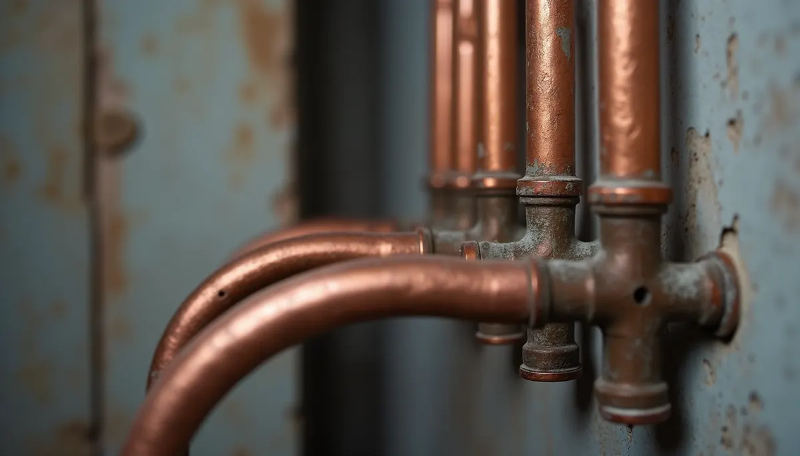
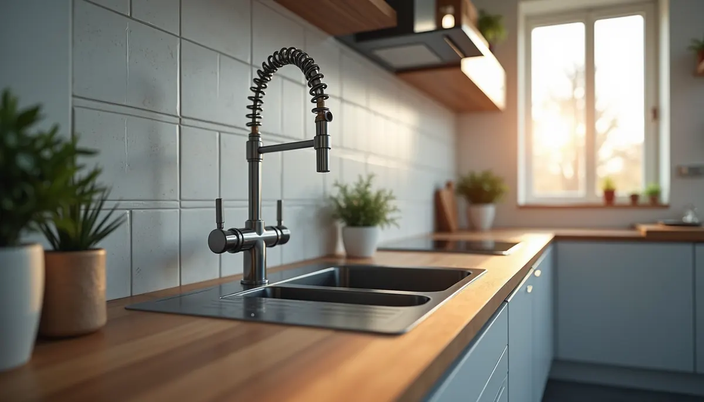

Water pipes are the unsung heroes of our homes. They quietly deliver the lifeblood of our daily routines, enabling everything from showers to laundry and cooking. But like any hardworking system, they don’t last forever. Knowing when to replace your water pipes can save you time, money, and stress. So, when should you consider an upgrade? The answer can depend on several factors.
Factors Influencing Pipe Lifespan
Understanding the factors that affect the longevity of your water pipes can help you determine if it’s time for an upgrade.
Material
Copper: Typically lasting between 50 to 70 years, copper pipes are durable and reliable. However, they can suffer from corrosion when exposed to acidic water, or acidic soils if the copper pipe was installed without casing, which may shorten their lifespan significantly.
Galvanized Steel: Common in homes built before the 1980s, these pipes generally last 40 to 50 years. They are prone to rust and corrosion, which can negatively impact both water pressure and quality. Homeowners with galvanized steel pipes can experience up to a 20% reduction in water flow due to buildup over time.
PVC (Polyvinyl Chloride): Often used for cold water lines such as the water line that runs from a water meter or well pump to your home, PVC pipes boast a lifespan of 50 to 100 years. Their resistance to corrosion makes them an excellent choice for many homeowners.
PEX (Cross-linked Polyethylene): A modern alternative, PEX pipes last around 40 to 50 years. Their flexibility and resistance to corrosion give them an edge in areas with fluctuating temperatures, such as locations with multiple seasonal changes throughout a given year.
Water Quality
Acidic water, indicated by a low pH, can corrode pipes, especially copper and galvanized steel. For instance, water testing reveals that in areas with acidic water, homeowners may experience pipe deterioration up to 50% faster than those with neutral pH levels.
Hard water, characterized by a high mineral content, leads to mineral buildup inside pipes. This buildup can restrict water flow, often reducing pressure by as much as 30%.
Soil Conditions
Factors such as soil acidity, moisture, rocks and tree roots can impact underground pipes. For example, pipes buried in wet, clay-heavy soil may deteriorate faster than those in well-drained environments.
Installation Quality
Poor installation isn’t just inconvenient; it can lead to major problems down the line. Pipes installed more than 10 years ago without permits may have compromised seals or lack protection from soil.
Water Pressure
Excessive water pressure puts a strain on pipes, increasing the likelihood of leaks. According to the American Water Works Association, a water pressure above 80 psi can lead to significant issues over time, ideal water pressure should reside between 55 - 65 PSI.
Signs It's Time for Replacement
Although the lifespan of pipes can vary, several signs indicate that you should consider replacing them:
Discolored Water
If you notice brown or reddish water, rust or corrosion in your pipes could be the culprit. This can happen in as little as five years for older galvanized steel pipes.
Low Water Pressure
Experiencing low water pressure can be frustrating. If your showers take longer to warm up or your sink fills slowly, you might have mineral buildup. This issue can reduce pressure by 30% or more, impacting your daily life.
Frequent Leaks
Regularly repairing leaks indicates your pipes may be nearing the end of their lifespan. These leaks can lead to extensive water damage, resulting in costly repairs.
Metallic Taste or Odor
A metallic taste or smell in your water may suggest corrosion, particularly in copper or galvanized steel pipes. This can be a health concern and may affect your water's overall quality.
Benefits of Upgrading Your Water Pipes
Upgrading your water pipes may seem daunting, but the long-term benefits outweigh the initial costs. Here are some advantages:
Improved Water Quality
New pipes significantly reduce the risk of corrosion and buildup. This ensures your family enjoys cleaner water, free from harmful contaminants.
Enhanced Water Pressure
With a new plumbing system, you can enjoy consistent and adequate water pressure. This improvement makes daily tasks, like showering or washing dishes, much more enjoyable.
Increased Home Value
Investing in plumbing upgrades can elevate your home’s value. A report by the National Association of Realtors found that plumbing updates can yield a return on investment of up to 85%.
Reduced Risk of Leaks
New pipes carry a significantly lower risk of leaks. This reduces not only repair costs but also the potential for water damage to your property.
Choosing the Right Pipes for Your Home
When upgrading your water pipes, you'll want to choose materials suited to your specific needs. Consider these factors:
Local Water Quality
Research the water quality in your area. If you experience issues like hard water, your choice of pipes may vary to ensure longevity.
Budget
Decide on your project budget. While copper pipes might come with a higher initial price, they often last longer and can be cost-effective over time.
Professional Installation
Always hire a licensed plumber like your local experts at Angle Stop Plumbing for installation. Professional installation minimizes common problems such as leaks and premature wear.
Moving Toward a Better Plumbing Future
Being proactive about your plumbing can save you from future headaches and costly emergencies. Recognizing the signs that it's time to replace your water pipes helps you make informed decisions.
Investing in new water pipes ensures better performance and peace of mind. A well-maintained plumbing system is essential for a comfortable and efficient home. With proper care and timely upgrades, your water pipes can serve you well for many years. Take the plunge today and secure your home’s water system for the future!

